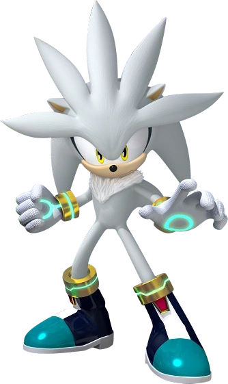

Ёж Сильвер — является персонажем в серии игр «Sonic the Hedgehog».
Он — антропоморфный ёж, родом из двухсот лет в будущем, где его роль состоит в том,
чтобы защитить своё время от катастроф прошлого, тем самым предотвратить разрушение своей эпохи.
Для своей миссии Сильвер использует свой психокинез — способность, являющаяся для этого времени нормой,
которая позволяет ему перемещать объекты силой своего разума.

Вид: Еж
Пол: Мужской
Возраст: 14 лет
Место рождения: Мир Сильвера
Рост: 100 см
Вес: 35 кг